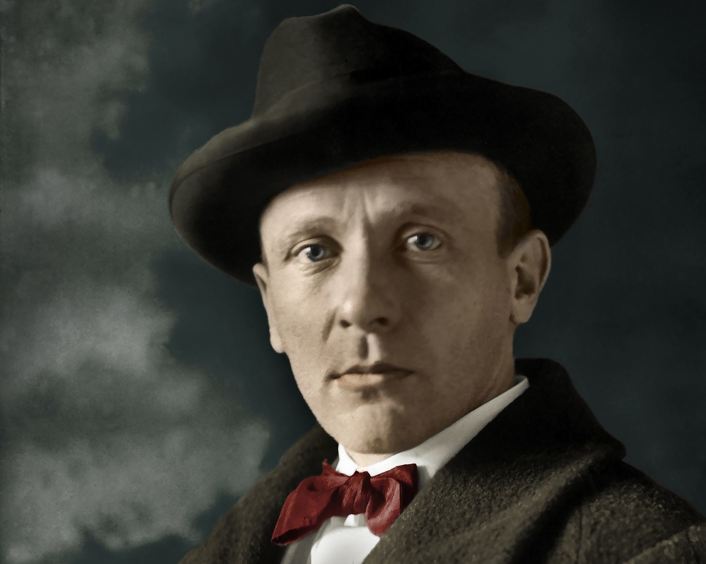

Михаил Афанасьевич Булгаков
Творчество Михаила Афанасьевича
Булгаков: Краткий очерк жизни и творчества

Михаил Афанасьевич Булгаков родился 15 мая 1891 года. Родиной Михаила Афанасиевича считается Киев, а глава семьи - Афанасий Иванович всю жизнь проработал учителем в одной духовной академии.
Начальное образование Михаил Афанасиевич получал, начиная с 1901 года, обучаясь в самой первой гимназии Киева. Далее, продолжил успешное образование в университете Киева на факультете медицины. Будучи на 2 курсе, Михаил Булгаков женился на Татьяне Лапп.
На 1916 год приходится окончание медицинского института. После получения диплома, Михаил Булгаков устраивается на работу в крупный госпиталь города Киев. В то же время, летом, его направляют в село Никольское, которое находится на территории Смоленской Губернии. Именно эти жизни, постоянно работая с больными и находясь на гране нервного срыва, Михаил Булгаков получил зависимость к морфию. Однако, его пристрастие было успешно преодолено благодаря многочисленным старанием его жены.
В период гражданской войны, Михаила Булгакова мобилизовали в армию УНР (Украинская Народная Республика), военным врачом. После службы там, Михаила Афанасиевича перенаправили в армию от Южной России.
Так, неся службу в армии, в 1920 году Булгаков заболевает тифом, и именно по этой причине не может покинуть страну в составе Добровольческой армии.
Через год, Михаил эмигрирует в Москву. Там, Михаил Афанасьевич, ведет активную литературную деятельность, находит возможности и пути сотрудничества со многими редакциями Москвы, а также участвует в заседаниях кружков литераторов.
В 1923 году Булгаков стал одним из членов Всероссийского Союза Писателей, где уже были Гимилев, Чуковский, а так же другие.
В 1924 разводится с первой женой, и через год Булгаков находит вторую любовь - Любовь Белозерскую.
С 1924 по 1928 год, Михаил Булгаков написал и издал свои прозаические шедевры, среди которых такие, как «Собачье сердце», «Белая гвардия», «Дни Турбиных». В тоже время, по личному приказу Иосифа Сталина, пьеса «Дни Турбиных» ставится во МХАТе.
Основные даты в жизни Булгакова М.А.
|
Образование |
Творчество |
| 1909 |
окончил Первую киевскую гимназию |
| 1923 |
вступает во Всероссийский Союз писателей |
| 1926 |
премьера пьесы «Дни Турбиных» |
|
Начало творческого пути |
| 31 октября 1916 года |
диплом лекаря |
Зрелое творчество |
| Произведения |
«Похождения Чичикова»(1921), «Белая гвардия»(1922—1924) , «Записки на манжетах» (1923) , «Багровый остров» (1924) ,«Зойкина квартира» (1925) |